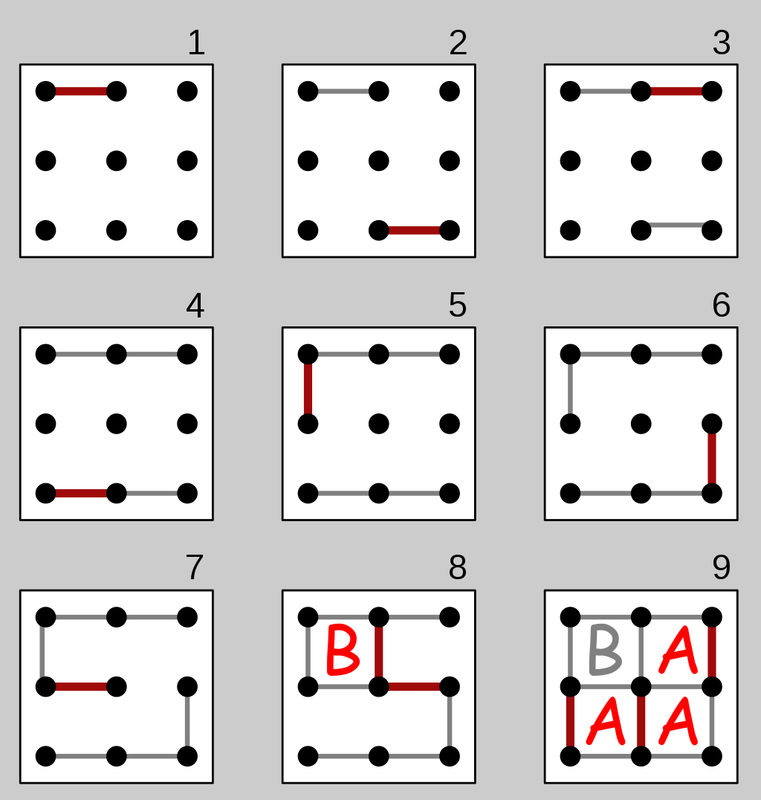

Maximum 8 * 8
Dots & Boxes Game!!!!
RULES:-
Starting with an empty grid of dots, two players take turns adding a single horizontal or vertical line between two unjoined adjacent dots. The player who completes the fourth side of a 1×1 box earns one point and takes another turn. (A point is typically recorded by placing a mark that identifies the player in the box, such as an initial.) The game ends when no more lines can be placed. The winner is the player with the most points.[2][7] The board may be of any size. When short on time, a 2×2 board (a square of 9 dots) is good for beginners.[8] A 5×5 is good for experts.[9] The diagram on the right shows a game being played on the 2×2 board. The second player (B) plays the mirror image of the first players move, hoping to divide the board into two pieces and tie the game. But the first player (A) makes a sacrifice at move 7 and B accepts the sacrifice, getting one box. However, B must now add another line, and connects the center dot to the center-right dot, causing the remaining boxes to be joined together in a chain (shown at the end of move 8). With As next move, player A gets them all and wins 3–1.

"